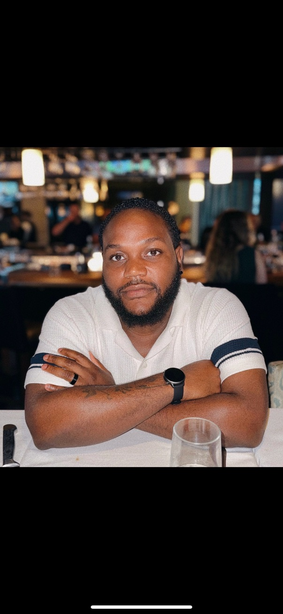

About me
Hey, I'm Tyrone, A.K.A Tahj — a self-taught front-end developer based in Spotsylvania, VA. I'm transitioning into web development after a background in customer service and technical support, bringing a people-first mindset to every project I build.
I enjoy turning ideas into real, working interfaces — writing clean HTML, thoughtful CSS, and JavaScript that makes things actually do stuff. Currently leveling up through The Odin Project, freeCodeCamp, and Codecademy.

Work
A responsive landing page for a fictional coffee shop. Built with a focus on CSS layout, media queries, and a sliding carousel menu.
A responsive single-page website for a fictional pet adoption service, built with HTML and CSS. Features a sticky navigation bar with a mobile hamburger menu, a full-width hero section with overlay text, a mission statement section, a responsive CSS Grid photo gallery of adoptable animals, and a contact form.
A lyric site for an original worship song written by Hope Henderson. Built so listeners can follow along and sing with the music.
What I work with
Get in touch
I'm open to junior front-end roles, freelance projects, and internship opportunities. Feel free to reach out — I'd love to talk.